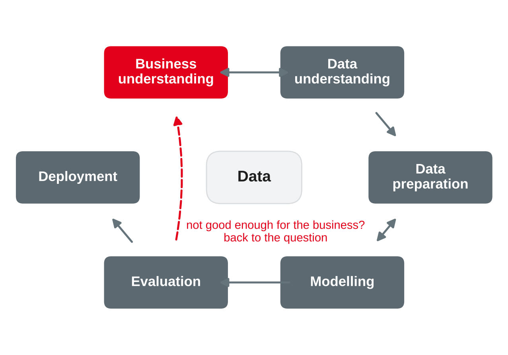
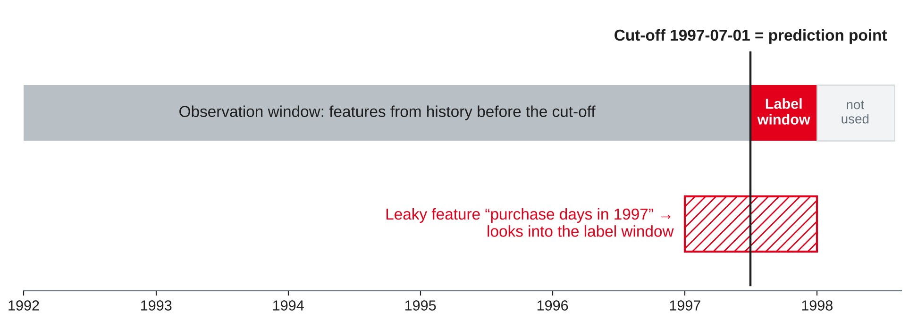

Data Analytics
ML recap · CRISP-DM · framing · features from the warehouse · baselines · data leakage · business cost and lift
DHBW Mannheim · Data Science and Artificial Intelligence · Semester 5
Today's question: how do we turn "we should use AI for our customers" into a precise ML task whose value we can measure before we build it?
| Task type | Business question | TPC-H example |
|---|---|---|
| Classification | Will it happen — yes or no? | Will this customer stop ordering in the next 6 months? |
| Regression | How much? | How much will this customer spend next year? |
| Clustering | Which groups exist? | Which customer groups buy alike? |
| Anomaly detection | What is unusual? | Which orders have unusual prices or quantities? |
| Co-occurrence | What goes together? | Which parts are ordered together? |
| Forecasting | How much, when, over time? | Monthly revenue per region next year (sessions 11–14) |
Based on Provost and Fawcett (2013, Chapter 2).
CRISP-DM

Own illustration based on Chapman et al. (2000).
| CRISP-DM task | Output | TPC-H example |
|---|---|---|
| Determine business objectives | Business objective and business success criteria | Keep more customers ordering; fewer customers lost per half-year |
| Assess situation | Resources, requirements, risks, costs and benefits | Sales has capacity for 2,000 calls per half-year |
| Determine data mining goals | Data mining goal and data mining success criteria | Rank customers by their risk of no order in the next 6 months; better than a simple rule |
| Produce project plan | Plan, initial tool and technique assessment | Feature table in DuckDB, models in scikit-learn |
Based on Chapman et al. (2000).
From a business wish to a precise ML task
If you cannot name the action, the prediction has no business value — however accurate it is.
Own compilation based on Provost and Fawcett (2013) and Chapman et al. (2000).
| Question | Framing for the TPC-H wholesaler |
|---|---|
| Decision | Sales calls the customers with the highest risk and offers a discount |
| Unit | One active customer (at least one purchase before the cut-off) |
| Target | churned = 1 if the customer has no purchase in the 6 months after the cut-off |
| Prediction point and horizon | Cut-off 1 July 1997; horizon 6 months |
| Features | Recency, number of purchase days, revenue, tenure, segment, region — all before the cut-off |
| Success | More churners in the called group than with a simple rule; positive profit of the campaign |
Own example with TPC-H data (Transaction Processing Performance Council, n.d.), based on Provost and Fawcett (2013).

Own illustration with TPC-H data (Transaction Processing Performance Council, n.d.), based on Kaufman et al. (2012).
For each request, decide: ML task (which type?), a query or report, or a different kind of question?
From the star schema to a feature table
| Feature family | Example | SQL idea |
|---|---|---|
| Recency | Days since the last purchase | cutoff - max(date_key) |
| Frequency | Number of purchase days | count(DISTINCT date_key) |
| Monetary | Revenue in the last 12 months | sum(revenue) FILTER (…) |
| Tenure | Days since the first purchase | cutoff - min(date_key) |
| Dimension attributes | Segment, region | Join dim_customer |
| Trends and ratios | Revenue last 6 vs. previous 6 months | Two filtered sums, then divide |
Own compilation based on Provost and Fawcett (2013) and Kimball and Ross (2013).
CREATE OR REPLACE TABLE churn_features AS
WITH hist AS ( -- only data BEFORE the cut-off
SELECT customer_key,
DATE '1997-07-01' - max(date_key) AS recency_days,
count(DISTINCT date_key) AS purchase_days,
coalesce(sum(revenue) FILTER (date_key >= DATE '1996-07-01'), 0)
AS revenue_12m,
DATE '1997-07-01' - min(date_key) AS tenure_days
FROM fact_sales WHERE date_key < DATE '1997-07-01'
GROUP BY customer_key),
future AS ( -- label window: next 6 months
SELECT DISTINCT customer_key FROM fact_sales
WHERE date_key >= DATE '1997-07-01' AND date_key < DATE '1998-01-01')
SELECT h.*, c.segment, c.region,
(future.customer_key IS NULL)::INT AS churned
FROM hist h JOIN dim_customer c USING (customer_key)
LEFT JOIN future USING (customer_key);Own example with TPC-H data (Transaction Processing Performance Council, n.d.).
What is "good" — and what is too good to be true?
| Approach | Accuracy | Churners found (of 3,446) | Precision |
|---|---|---|---|
| "Nobody churns" (majority class) | 65.5 % | 0 | — |
| Rule: "churn if 9 or fewer purchase days" | 62.5 % | 1,611 (46.8 %) | 45.7 % |
Own analysis with TPC-H data (Transaction Processing Performance Council, n.d.); based on Provost and Fawcett (2013, Chapter 7).
Leakage is information about the target in the training data that would not be legitimately available when the model is used.
| Type | Example |
|---|---|
| Features from the future | "Purchase days in 1997" for a cut-off in July 1997 |
| Features caused by the target | "Retention discount granted" — only given to customers who announced to leave |
| Training rows that see the test period | Random split of time-ordered data; scaling or feature selection on all data before the split |
Rule of thumb: learn–predict separation — build every feature as if the future did not exist yet.
Based on Kaufman et al. (2012).
| Feature | Churn rate in the top 10 % of the score | Lift |
|---|---|---|
| Purchase days before the cut-off (legitimate) | 46.5 % | 1.35 |
| Purchase days in 1997 (leaky) | 100 % | 2.90 |
Own analysis with TPC-H data (Transaction Processing Performance Council, n.d.); leakage concept from Kaufman et al. (2012).
Assumptions for the retention campaign: a call with discount costs 2,000; 30 % of the called churners stay; a kept customer is worth 15,000 margin.
| Actual churner | Actual non-churner | |
|---|---|---|
| Called (predicted churner) | TP: 0.3 × 15,000 − 2,000 = +2,500 | FP: −2,000 |
| Not called | FN: 0 | TN: 0 |
Based on Provost and Fawcett (2013, Chapter 7) and Elkan (2001).
| Customers called (fewest purchase days first) | Churn rate of the last decile added | Cumulative lift | Cumulative profit |
|---|---|---|---|
| Top 10 % | 46.5 % | 1.35 | 92,500 |
| Top 20 % | 48.1 % | 1.37 | 257,000 |
| Top 30 % | 42.9 % | 1.33 | 187,500 |
| Top 50 % | 36.8 % | 1.27 | −176,500 |
| All 10,000 | 19.8 % | 1.00 | −4,493,000 |
Own analysis with TPC-H data (Transaction Processing Performance Council, n.d.); method based on Provost and Fawcett (2013, Chapter 8).
WITH ranked AS (
SELECT churned,
ntile(10) OVER (ORDER BY purchase_days, recency_days DESC,
customer_key) AS decile
FROM churn_features),
d AS (SELECT decile, count(*) AS n, sum(churned) AS c
FROM ranked GROUP BY decile)
SELECT decile, n, c, round(c / n, 3) AS churn_rate,
round(sum(c) OVER w / sum(n) OVER w
/ (SELECT avg(churned) FROM churn_features), 2) AS cum_lift,
sum(2500 * c - 2000 * (n - c)) OVER w AS cum_profit
FROM d WINDOW w AS (ORDER BY decile)
ORDER BY decile;Own example with TPC-H data (Transaction Processing Performance Council, n.d.).
Own compilation based on Chapman et al. (2000) and Provost and Fawcett (2013).
Framing on paper, features in DuckDB
Work in pairs. For each case, answer the six framing questions and name one leakage risk.
Work in pairs. Write queries and a short interpretation in your notebook.
Preparation: keep churn_features in tpch.duckdb, check that import sklearn works, and choose your use case with your partner.